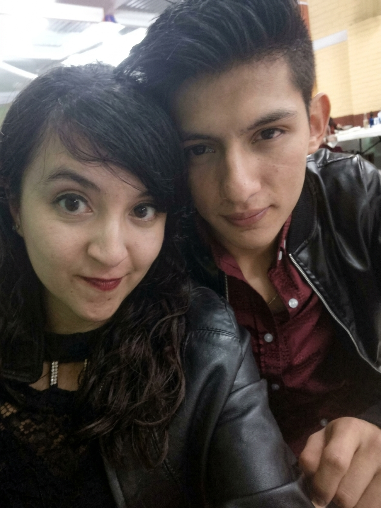
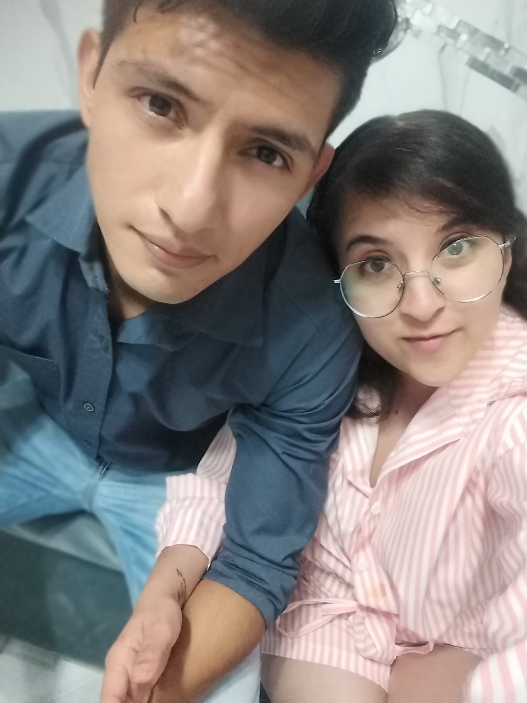

Reserva la fecha
Nuestra boda
Cristhian & Mayrane
Tierra y Libertad · Cuautitlán
Cómo empezó
Nos conocimos en una fiesta, entre luces y música que nadie recuerda con exactitud. Lo que sí recordamos es que la conversación no se acabó esa noche, ni la siguiente, ni ninguna de las que vinieron después.
Entre risas que se volvieron costumbre y planes que se volvieron casa, descubrimos que lo nuestro no era casualidad: era decisión. Hoy elegimos seguir eligiéndonos.
Falta poco
Mientras llega el gran día, ve guardando el atuendo.
El día
pm
Casamiento
El sí más esperado, rodeados de las personas que nos vieron llegar hasta aquí.
Tierra y Libertad · Cuautitlánpm
Comida y baile
Mesa larga, brindis y pista abierta hasta que el cuerpo aguante.
Salón · hasta la madrugadaCasamiento
Ceremonia en Tierra y Libertad
Cóctel de bienvenida
Jardín del salón
Cena
Mesa larga para todos
Baile y brindis
Hasta que el cuerpo aguante
Así cuidamos cada detalle para ti.
Cómo llegar
Tierra y Libertad
Manzana 010, Lázaro Cárdenas
54870 Cuautitlán, Estado de México
Recuerdos


Te esperamos
Solo tu nombre, si vienes y con cuántos. Toma menos de un minuto.